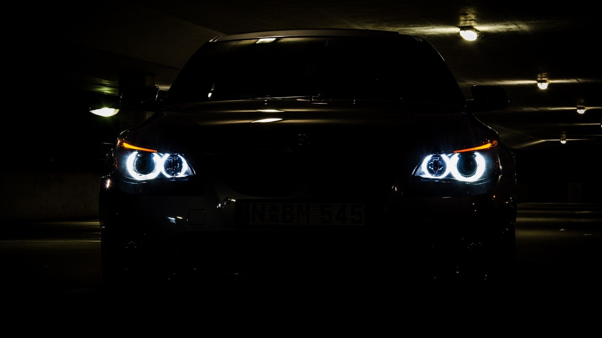

La BMW E60 est la cinquième génération de série 5 et est commercialisée depuis août 2003, elle fut marquée par un style qui a choqué les puristes, issue du coup de crayon du célèbre designer Chris Bangle. Un style taillé à la serpe. Début 2007, cette série 5 a subi un léger restylage concernant principalement les boucliers avant et arrière ainsi qu'une planche de bord étoffée de nouveaux matériaux à l'aspect plus valorisant.

(x) modèle disponible avec une transmission intégrale (xdrive) / L4 : moteur 4 cylindres en ligne / L6 : moteur 6 cylindres en ligne / V8 : moteur 8 cylindres en V / V10 : moteur 10 cylindres en V.